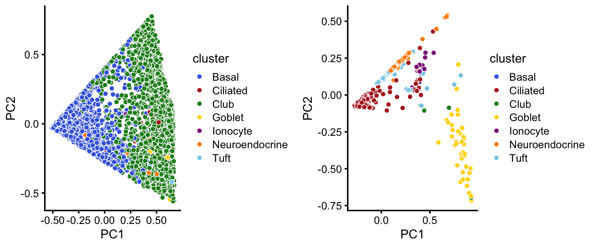
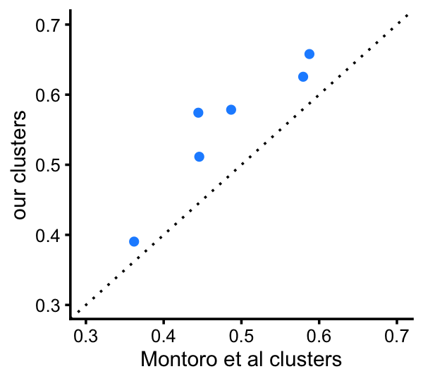
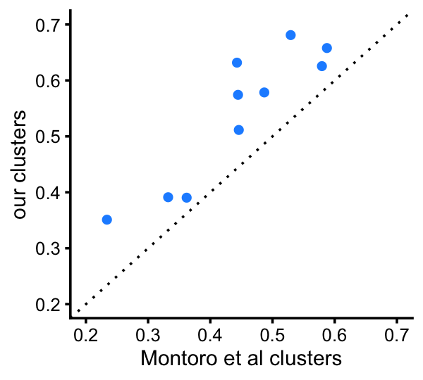
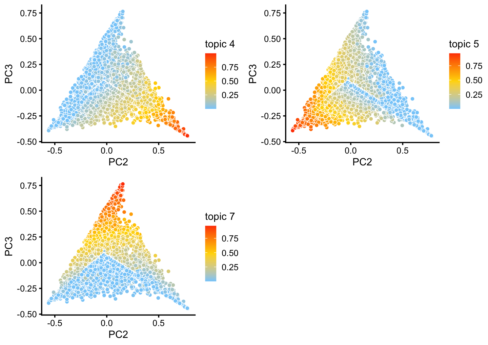
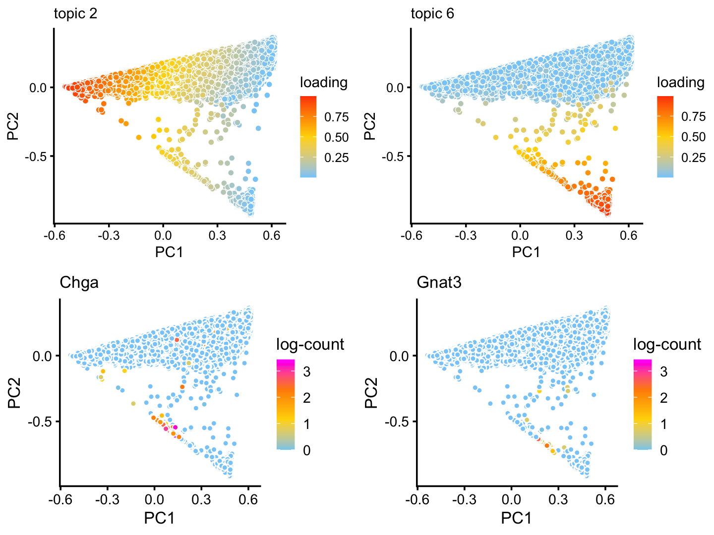
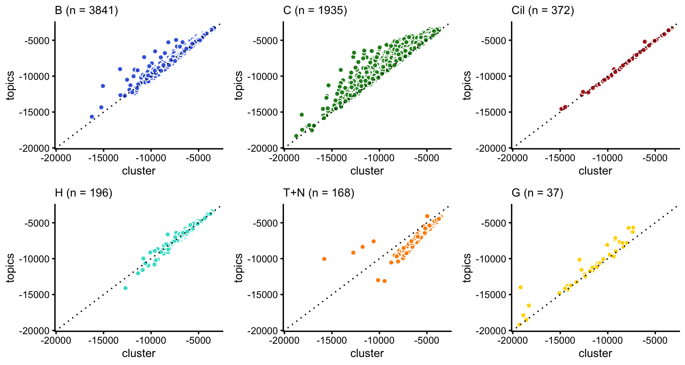
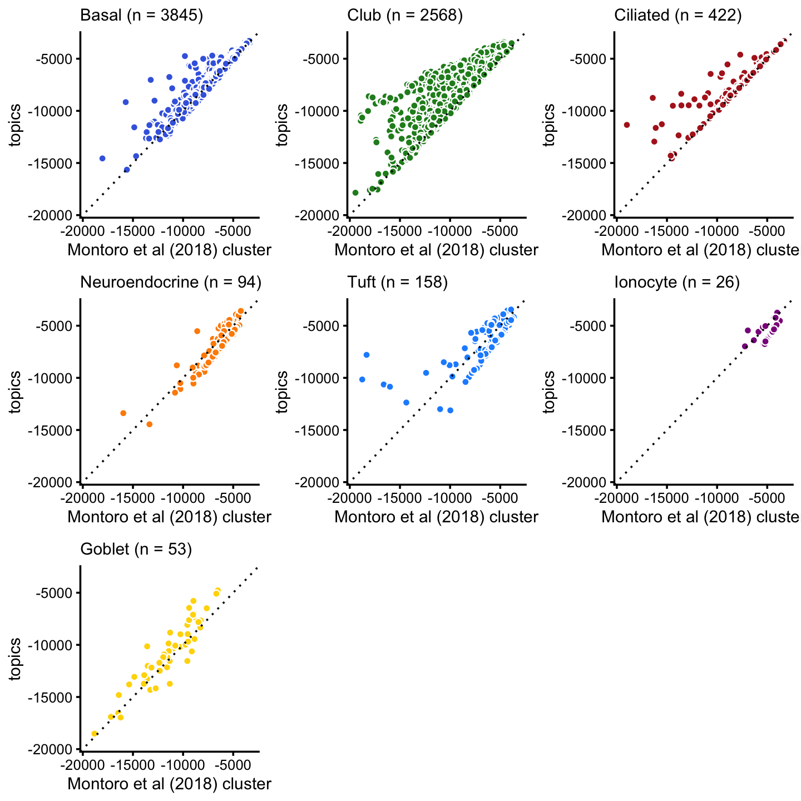

Identify clusters in droplet data using topic model
Peter Carbonetto
Last updated: 2020-10-18
Checks: 7 0
Knit directory: single-cell-topics/analysis/
This reproducible R Markdown analysis was created with workflowr (version 1.6.2.9000). The Checks tab describes the reproducibility checks that were applied when the results were created. The Past versions tab lists the development history.
Great! Since the R Markdown file has been committed to the Git repository, you know the exact version of the code that produced these results.
Great job! The global environment was empty. Objects defined in the global environment can affect the analysis in your R Markdown file in unknown ways. For reproduciblity it’s best to always run the code in an empty environment.
The command set.seed(1) was run prior to running the code in the R Markdown file. Setting a seed ensures that any results that rely on randomness, e.g. subsampling or permutations, are reproducible.
Great job! Recording the operating system, R version, and package versions is critical for reproducibility.
Nice! There were no cached chunks for this analysis, so you can be confident that you successfully produced the results during this run.
Great job! Using relative paths to the files within your workflowr project makes it easier to run your code on other machines.
Great! You are using Git for version control. Tracking code development and connecting the code version to the results is critical for reproducibility.
The results in this page were generated with repository version e672ef7. See the Past versions tab to see a history of the changes made to the R Markdown and HTML files.
Note that you need to be careful to ensure that all relevant files for the analysis have been committed to Git prior to generating the results (you can use wflow_publish or wflow_git_commit). workflowr only checks the R Markdown file, but you know if there are other scripts or data files that it depends on. Below is the status of the Git repository when the results were generated:
Ignored files:
Ignored: data/droplet.RData
Ignored: data/pbmc_68k.RData
Ignored: data/pbmc_purified.RData
Ignored: data/pulseseq.RData
Ignored: output/droplet/diff-count-droplet.RData
Ignored: output/droplet/fits-droplet.RData
Ignored: output/droplet/rds/
Ignored: output/pbmc-68k/fits-pbmc-68k.RData
Ignored: output/pbmc-68k/rds/
Ignored: output/pbmc-purified/fits-pbmc-purified.RData
Ignored: output/pbmc-purified/rds/
Ignored: output/pulseseq/diff-count-pulseseq.RData
Ignored: output/pulseseq/fits-pulseseq.RData
Ignored: output/pulseseq/rds/
Untracked files:
Untracked: analysis/temp.RData
Note that any generated files, e.g. HTML, png, CSS, etc., are not included in this status report because it is ok for generated content to have uncommitted changes.
These are the previous versions of the repository in which changes were made to the R Markdown (analysis/clusters_droplet.Rmd) and HTML (docs/clusters_droplet.html) files. If you’ve configured a remote Git repository (see ?wflow_git_remote), click on the hyperlinks in the table below to view the files as they were in that past version.
| File | Version | Author | Date | Message |
|---|---|---|---|---|
| Rmd | e672ef7 | Peter Carbonetto | 2020-10-18 | workflowr::wflow_publish(“clusters_droplet.Rmd”) |
| html | 7363e2a | Peter Carbonetto | 2020-10-18 | Added log-likelihood scatterplots to clusters_droplet analysis. |
| Rmd | a51c33b | Peter Carbonetto | 2020-10-18 | workflowr::wflow_publish(“clusters_droplet.Rmd”) |
| Rmd | 199ca88 | Peter Carbonetto | 2020-10-17 | Working on analysis of single-cell likelihoods in clusters_droplet.Rmd. |
| Rmd | 627cdb4 | Peter Carbonetto | 2020-10-16 | A couple minor edits to the code and text of the analyses. |
| html | 8a4b9da | Peter Carbonetto | 2020-10-15 | Adjusted code for some of the PCA plots in the clusters_droplet |
| Rmd | bb62871 | Peter Carbonetto | 2020-10-15 | workflowr::wflow_publish(“clusters_droplet.Rmd”) |
| html | 4cb48ba | Peter Carbonetto | 2020-10-15 | Adjusted dimensions of a PCA plot in clusters_droplet analysis. |
| Rmd | b64e34f | Peter Carbonetto | 2020-10-15 | workflowr::wflow_publish(“clusters_droplet.Rmd”, verbose = TRUE) |
| html | c679d14 | Peter Carbonetto | 2020-10-15 | Revised PCA plots showing the clustering in the clusters_droplet analysis. |
| Rmd | 3bff164 | Peter Carbonetto | 2020-10-15 | workflowr::wflow_publish(“clusters_droplet.Rmd”, verbose = TRUE) |
| html | c12c1cf | Peter Carbonetto | 2020-10-11 | Replaced dotplot with boxplot in clusters_pulseseq analysis. |
| Rmd | 60b069f | Peter Carbonetto | 2020-10-11 | workflowr::wflow_publish(“clusters_droplet.Rmd”) |
| html | 84e5598 | Peter Carbonetto | 2020-10-11 | Fixed small mistake in clusters_droplet analysis. |
| Rmd | bdcb88e | Peter Carbonetto | 2020-10-11 | workflowr::wflow_publish(“clusters_droplet.Rmd”) |
| html | d9bf10d | Peter Carbonetto | 2020-10-11 | Added T+N cluster to totalvardist plots in clusters_droplet analysis. |
| Rmd | 87d00d0 | Peter Carbonetto | 2020-10-11 | workflowr::wflow_publish(“clusters_droplet.Rmd”) |
| html | b6374a1 | Peter Carbonetto | 2020-10-11 | Added plots comparing total variation distances in clusters_droplet |
| Rmd | c69aa03 | Peter Carbonetto | 2020-10-11 | workflowr::wflow_publish(“clusters_droplet.Rmd”) |
| Rmd | 62834cb | Peter Carbonetto | 2020-10-09 | Working on various exploratory analyses of the droplet and pulse-seq data. |
| Rmd | d2377ec | Peter Carbonetto | 2020-10-06 | Simplified implementation of cellcycle_pca_plot by making use of a new pca_plot interface from the fastTopics package. |
| html | 5510fd5 | Peter Carbonetto | 2020-10-06 | clusters_droplet no longer uses plots.R. |
| Rmd | d5ea8c2 | Peter Carbonetto | 2020-10-06 | workflowr::wflow_publish(“clusters_droplet.Rmd”, verbose = TRUE) |
| html | d707238 | Peter Carbonetto | 2020-10-06 | Re-built clusters_droplet analysis using new fastTopics plots. |
| Rmd | f4e0448 | Peter Carbonetto | 2020-10-06 | workflowr::wflow_publish(“clusters_droplet.Rmd”, verbose = TRUE) |
| html | 3bada76 | Peter Carbonetto | 2020-10-04 | Added PCA plots to clusters_droplet analysis showing substructure in |
| Rmd | 198eaf8 | Peter Carbonetto | 2020-10-04 | workflowr::wflow_publish(“clusters_droplet.Rmd”) |
| Rmd | 5e57ced | Peter Carbonetto | 2020-10-03 | Working on plots highlighting substructure in T+N cluster. |
| html | ab1ed99 | Peter Carbonetto | 2020-09-27 | Resized plot in clusters_droplet analysis. |
| Rmd | 306f5dc | Peter Carbonetto | 2020-09-27 | workflowr::wflow_publish(“clusters_droplet.Rmd”) |
| html | bf299b9 | Peter Carbonetto | 2020-09-27 | Use pca_plot_with_counts in clusters_droplet analysis. |
| Rmd | 54f44d3 | Peter Carbonetto | 2020-09-27 | workflowr::wflow_publish(“clusters_droplet.Rmd”) |
| html | 4fe31a6 | Peter Carbonetto | 2020-09-22 | Build site. |
| Rmd | ffdc209 | Peter Carbonetto | 2020-09-22 | workflowr::wflow_publish(“clusters_droplet.Rmd”) |
| html | 2ddbe33 | Peter Carbonetto | 2020-09-21 | A couple refinements to clusters_droplet analysis. |
| Rmd | 2a5e8da | Peter Carbonetto | 2020-09-21 | workflowr::wflow_publish(“clusters_droplet.Rmd”) |
| html | 0a8b571 | Peter Carbonetto | 2020-09-21 | Added PCA plots showing continuous variation in club cells. |
| Rmd | 605b540 | Peter Carbonetto | 2020-09-21 | workflowr::wflow_publish(“clusters_droplet.Rmd”) |
| html | db6135c | Peter Carbonetto | 2020-09-21 | Added B+C cluster to clustering of droplet data, and added plot |
| Rmd | 69d1f0a | Peter Carbonetto | 2020-09-21 | workflowr::wflow_publish(“clusters_droplet.Rmd”) |
| Rmd | e2a8071 | Peter Carbonetto | 2020-09-20 | Saved new clustering-droplet.rds. |
| html | b5e1a7e | Peter Carbonetto | 2020-09-20 | Fixed up Structure plot in clusters_droplet analysis. |
| Rmd | b7d1acc | Peter Carbonetto | 2020-09-20 | workflowr::wflow_publish(“clusters_droplet.Rmd”) |
| html | 4172024 | Peter Carbonetto | 2020-09-20 | Identified H cluster in droplet data. |
| Rmd | decefd4 | Peter Carbonetto | 2020-09-20 | workflowr::wflow_publish(“clusters_droplet.Rmd”) |
| html | 5361fdf | Peter Carbonetto | 2020-09-19 | Adjusted the plots in clusters_droplet analysis. |
| Rmd | 7830b35 | Peter Carbonetto | 2020-09-19 | workflowr::wflow_publish(“clusters_droplet.Rmd”) |
| html | 311b4e8 | Peter Carbonetto | 2020-09-19 | Made a few minor improvements to the clusters_droplet analysis. |
| Rmd | ba90d80 | Peter Carbonetto | 2020-09-19 | workflowr::wflow_publish(“clusters_droplet.Rmd”) |
| html | b1cb82e | Peter Carbonetto | 2020-09-19 | Added clustering from PCA plots to clusters_droplet analysis. |
| Rmd | 81e7faf | Peter Carbonetto | 2020-09-19 | workflowr::wflow_publish(“clusters_droplet.Rmd”) |
| Rmd | c8dd3af | Peter Carbonetto | 2020-09-16 | Implemented basic_pca_plot; improved labeled_pca_plot function. |
Here we perform PCA on the topic proportions to identify clusters in the droplet data.
Load the packages used in the analysis below, as well as additional functions that we will use to generate some of the plots.
library(Matrix)
library(dplyr)
library(fastTopics)
library(ggplot2)
library(cowplot)
source("../code/plots.R")Load data and results
Load the droplet data.
load("../data/droplet.RData")Load the \(k = 7\) Poisson NMF model fit.
fit <- readRDS("../output/droplet/rds/fit-droplet-scd-ex-k=7.rds")$fitIdentify clusters from principal components
To identify clusters, we begin by plotting PCs computed from the topic proportions. (Note that only 6 PCs are needed for 7 topics.)
p1 <- pca_plot(poisson2multinom(fit),pcs = 1:2,fill = "none")
p2 <- pca_plot(poisson2multinom(fit),pcs = 3:4,fill = "none")
p3 <- pca_plot(poisson2multinom(fit),pcs = 5:6,fill = "none")
plot_grid(p1,p2,p3,nrow = 1,ncol = 3)
Some of the structure is more evident from “hexbin” plots showing the density of the points.
breaks <- c(0,1,5,10,100,Inf)
p4 <- pca_hexbin_plot(poisson2multinom(fit),pcs = 1:2,breaks = breaks)
p5 <- pca_hexbin_plot(poisson2multinom(fit),pcs = 3:4,breaks = breaks)
p6 <- pca_hexbin_plot(poisson2multinom(fit),pcs = 5:6,breaks = breaks)
p4 <- p4 + guides(fill = "none")
p5 <- p5 + guides(fill = "none")
p6 <- p6 + guides(fill = "none")
plot_grid(p4,p5,p6,nrow = 1,ncol = 3)
From these PCA plots, we define 4 clusters, labeled A, Cil, G and T+N. (The reasoning behind these labels will become clear later.) Points that do not fit in any of these clusters are assigned to a “background cluster”, labeled U.
pca <- prcomp(poisson2multinom(fit)$L)$x
x <- rep("U",nrow(pca))
pc1 <- pca[,1]
pc2 <- pca[,2]
pc6 <- pca[,6]
x[pc2 > -0.15] <- "A"
x[pc1 > 0.3 & pc2 < -0.75] <- "Cil"
x[pc1 <= 0.3 & pc2 >= -0.75 & pc2 < -0.4] <- "T+N"
x[pc6 < -0.05] <- "G"There is additional substructure in cluster A, which is more apparent in the projection onto the top 2 PCs computed from cluster A only.
rows <- which(x == "A")
fit2 <- select(poisson2multinom(fit),loadings = rows)
p7 <- pca_plot(fit2,fill = "none")
p8 <- pca_hexbin_plot(fit2,breaks = breaks) + guides(fill = "none")
plot_grid(p7,p8)
The variation in PCs 1 and 2 is mostly produced by topics 2, 4 and 5.
p9 <- pca_plot(fit2,k = c(2,4,5))
print(p9)
Topic 4 in particular corresponds closely to expression of Krt13 which was identified as being uniquely expressed by transitional “hillock” cells.
p10 <- pca_plot(fit2,fill = log10(counts[rows,"Krt13"])) +
labs(fill = "log10(count)",title = "Krt13")
print(p10)
| Version | Author | Date |
|---|---|---|
| d707238 | Peter Carbonetto | 2020-10-06 |
| ab1ed99 | Peter Carbonetto | 2020-09-27 |
| bf299b9 | Peter Carbonetto | 2020-09-27 |
| 0a8b571 | Peter Carbonetto | 2020-09-21 |
| db6135c | Peter Carbonetto | 2020-09-21 |
| 4172024 | Peter Carbonetto | 2020-09-20 |
| 5361fdf | Peter Carbonetto | 2020-09-19 |
| 311b4e8 | Peter Carbonetto | 2020-09-19 |
We label the three more-or-less distinct subclusters as B, C and H, and assign the remaining “in between” data points to a new “background cluster”, B+C.
pca <- prcomp(fit2$L)$x
pc1 <- pca[,1]
pc2 <- pca[,2]
y <- rep("B+C",nrow(pca))
y[pc1 < 0.1] <- "B"
y[pc1 > 0.4 & pc2 < 0.45] <- "C"
y[pc2 > 0.55] <- "H"
x[rows] <- yIn summary, we have subdivided the droplet data into 8 subsets. The substructure is more clear when we plot PCs separately for the abundant and rare cell-types.
samples$cluster <- factor(x,c("B","C","B+C","H","Cil","T+N","G","U"))
abundant <- c("B","C","B+C","H")
rare <- c("Cil","T+N","G","U")
cluster_colors <- c("royalblue", # B
"forestgreen", # C
"slategray", # B+C
"turquoise", # H
"firebrick", # Cil
"darkorange", # T+N
"gold", # G
"gainsboro") # U
rows1 <- which(is.element(samples$cluster,abundant))
rows2 <- which(is.element(samples$cluster,rare))
fit1 <- select(poisson2multinom(fit),loadings = rows1)
fit2 <- select(poisson2multinom(fit),loadings = rows2)
p11a <- pca_plot(fit1,fill = samples[rows1,"cluster"]) +
scale_fill_manual(values = cluster_colors,drop = FALSE) +
labs(fill = "cluster")
p11b <- pca_plot(fit2,fill = samples[rows2,"cluster"]) +
scale_fill_manual(values = cluster_colors,drop = FALSE) +
labs(fill = "cluster")
plot_grid(p11a,p11b,nrow = 1,ncol = 2)
The clusters identified here correspond well to the Montoro et al (2018) clustering, with some exceptions (e.g., we do not identify an ionocytes cluster, and the neuroendocrine and tuft cells are included in the same cluster).
with(samples,table(tissue,cluster))
# cluster
# tissue B C B+C H Cil T+N G U
# Basal 3682 16 142 5 0 0 0 0
# Ciliated 1 13 4 0 371 5 0 31
# Club 93 1878 411 192 0 0 2 2
# Goblet 2 20 1 0 0 0 42 0
# Ionocyte 9 0 1 0 0 1 1 14
# Neuroendocrine 27 4 6 0 0 51 0 8
# Tuft 27 5 5 0 1 111 2 7This close correspondence is also clear from the PCA plots:
tissue_colors <- c("royalblue", # basal
"firebrick", # ciliated
"forestgreen", # club
"gold", # goblet
"darkmagenta", # ionocyte
"darkorange", # neuroendocrine
"skyblue") # tuft
p12a <- pca_plot(fit1,fill = samples[rows1,"tissue"]) +
scale_fill_manual(values = tissue_colors,drop = FALSE) +
labs(fill = "cluster")
p12b <- pca_plot(fit2,fill = samples[rows2,"tissue"]) +
scale_fill_manual(values = tissue_colors,drop = FALSE) +
labs(fill = "cluster")
plot_grid(p12a,p12b,nrow = 1,ncol = 2)
By computing inter-cluster and inter-topic total variation distances in relative expression levels, we see that the clusters identified above show greater differentiation in gene expression, and the topics show more differentiation than the clusters.
fit_montoro <- init_poisson_nmf_from_clustering(counts,samples$tissue)
fit_cluster <- init_poisson_nmf_from_clustering(counts,samples$cluster)
fit_merge <- merge_topics(poisson2multinom(fit),c("k5","k7"))
d_montoro <- totalvardist(poisson2multinom(fit_montoro)$F)
d_cluster <- totalvardist(poisson2multinom(fit_cluster)$F[,-c(3,8)])
d_topics <- totalvardist(fit_merge$F[,-3])
cat("Montoro et al (2018) clustering:\n")
print(d_montoro,digits = 3)
cat("Our clustering:\n")
print(d_cluster,digits = 3)
cat("Topics:\n")
print(d_topics,digits = 3)
# Montoro et al (2018) clustering:
# Basal Ciliated Club Goblet Ionocyte Neuroendocrine Tuft
# Basal 0.000 0.362 0.446 0.579 0.262 0.236 0.272
# Ciliated 0.362 0.000 0.487 0.587 0.362 0.340 0.351
# Club 0.446 0.487 0.000 0.445 0.497 0.425 0.472
# Goblet 0.579 0.587 0.445 0.000 0.589 0.515 0.553
# Ionocyte 0.262 0.362 0.497 0.589 0.000 0.275 0.294
# Neuroendocrine 0.236 0.340 0.425 0.515 0.275 0.000 0.214
# Tuft 0.272 0.351 0.472 0.553 0.294 0.214 0.000
# Our clustering:
# B C H Cil T+N G
# B 0.000 0.511 0.347 0.390 0.351 0.626
# C 0.511 0.000 0.523 0.579 0.632 0.574
# H 0.347 0.523 0.000 0.422 0.436 0.659
# Cil 0.390 0.579 0.422 0.000 0.391 0.658
# T+N 0.351 0.632 0.436 0.391 0.000 0.681
# G 0.626 0.574 0.659 0.658 0.681 0.000
# Topics:
# k1 k2 k4 k6 k5+k7
# k1 0.000 0.821 0.826 0.810 0.797
# k2 0.821 0.000 0.381 0.409 0.695
# k4 0.826 0.381 0.000 0.427 0.681
# k6 0.810 0.409 0.427 0.000 0.705
# k5+k7 0.797 0.695 0.681 0.705 0.000Here is a plot summarizing these differences:
pdat <-
rbind(data.frame(method="montoro.et.al",d=d_montoro[upper.tri(d_montoro)]),
data.frame(method="clusters", d=d_cluster[upper.tri(d_cluster)]),
data.frame(method="topics", d=d_topics[upper.tri(d_topics)]))
p13 <- ggplot(pdat,aes(x = method,y = d)) +
geom_boxplot(width = 0.25) +
labs(x = "",y = "total variation dist") +
theme_cowplot(font_size = 9)
print(p13)
This next plot provides a more direct comparison of the total variation distances among the 5 clusters that are comparable to the Montoro et al clusters:
fit_montoro <- merge_topics(poisson2multinom(fit_montoro),
c("Tuft","Neuroendocrine"))
d_montoro <- totalvardist(fit_montoro$F[,c("Basal","Ciliated","Club","Goblet",
"Tuft+Neuroendocrine")])
d_cluster <-
totalvardist(poisson2multinom(fit_cluster)$F[,c("B","Cil","C","G","T+N")])
pdat <- data.frame(montoro = d_montoro[upper.tri(d_montoro)],
clusters = d_cluster[upper.tri(d_cluster)])
p14 <- ggplot(pdat,aes(x = montoro,y = clusters)) +
geom_point(shape = 21,size = 2,color = "white",fill = "dodgerblue") +
geom_abline(intercept = 0,slope = 1,color = "black",linetype = "dotted") +
xlim(0.2,0.7) +
ylim(0.2,0.7) +
labs(x = "Montoro et al clusters",y = "our clusters") +
theme_cowplot(font_size = 9)
print(p14)
| Version | Author | Date |
|---|---|---|
| c679d14 | Peter Carbonetto | 2020-10-15 |
Structure plot
The structure plot summarizes the topic proportions in each of these 8 subsets:
set.seed(1)
topic_colors <- c("gold","royalblue","salmon","turquoise","olivedrab",
"firebrick","forestgreen")
topics <- c(3,4,5,1,7,2,6)
rows <- sort(c(sample(which(samples$cluster == "B"),800),
sample(which(samples$cluster == "C"),800),
which(samples$cluster == "B+C"),
which(samples$cluster == "H"),
which(samples$cluster == "Cil"),
which(samples$cluster == "T+N"),
which(samples$cluster == "G"),
which(samples$cluster == "U")))
p15 <- structure_plot(select(poisson2multinom(fit),loadings = rows),
grouping = samples[rows,"cluster"],
topics = topics,colors = topic_colors[topics],
perplexity = c(70,70,30,30,50,30,12,18),
n = Inf,gap = 30,num_threads = 4,verbose = FALSE)
print(p15)
Based on this structure plot, and the above results, we roughly subdivide the droplet data into two: (1) the Cil, T+N and G clusters that give rise to well-separated clusters, and (2) the B, C, B+C and H subsets that contain interesting substructure but much less distinct clustering. Therefore,the cluster labels B, C, B+C and H are useful as a guide but should be taken with a grain of salt as the boundaries between these clusters are somewhat arbitrary.
Note the distribution of the topics in cluster C suggests that there is further substantial heterogeneity in these cells beyond what can be captured by identifying “hard” clusters. In particular, there is additional continuous variation in gene expression primarily captured by topics 5 and 7:
p16 <- pca_plot(fit1,pcs = 2:3,k = c(4,5,7))
print(p16)
Although subtle, there is variation in topics 2 and 6 within the T+N cluster that tracks closely with the tuft (here signaled by gene Gnat3) and pulmonary neuroendocrine (Chga) cell-types:
p17 <- pca_plot(poisson2multinom(fit),k = 2)
p18 <- pca_plot(poisson2multinom(fit),k = 6)
p19 <- pca_plot(poisson2multinom(fit),fill = log10(counts[,"Chga"])) +
labs(fill = "log10(count)",title = "Chga")
p20 <- pca_plot(poisson2multinom(fit),fill = log10(counts[,"Gnat3"])) +
labs(fill = "log10(count)",title = "Gnat3")
plot_grid(p17,p18,p19,p20)
Analysis of single-cell likelihoods
Here we calculate single-cell likelihoods to assess how well the multinomial topic model captures expression in different cell-types.
fit_merge <- merge_topics(poisson2multinom(fit),c("k5","k7"))
fit_cluster <- init_poisson_nmf_from_clustering(counts,samples$cluster)
fit_montoro <- init_poisson_nmf_from_clustering(counts,samples$tissue)
fit_cluster <- poisson2multinom(fit_cluster)
fit_montoro <- poisson2multinom(fit_montoro)
loglik_topics <- loglik_multinom_topic_model(counts,fit_merge)
loglik_cluster <- loglik_multinom_topic_model(counts,fit_cluster)
loglik_montoro <- loglik_multinom_topic_model(counts,fit_montoro)Here we compare the likelihood under gene expression levels estimated by a hard clustering; specifically, we compare the Montoro et al (2018) clustering against our clustering. Overall, our clustering appears to better fit the data, particularly in the abundant cell types (basal, club, ciliated).
minloglik <- -20000
p1 <- loglik_scatterplot(loglik_montoro,loglik_cluster,samples$tissue,"Basal",
"royalblue",minloglik,"Montoro et al (2018) cluster",
"our clusters")
p2 <- loglik_scatterplot(loglik_montoro,loglik_cluster,samples$tissue,"Club",
"forestgreen",minloglik,"Montoro et al (2018) cluster",
"our clusters")
p3 <- loglik_scatterplot(loglik_montoro,loglik_cluster,samples$tissue,
"Ciliated","firebrick",minloglik,
"Montoro et al (2018) cluster","our clusters")
p4 <- loglik_scatterplot(loglik_montoro,loglik_cluster,samples$tissue,
"Neuroendocrine","darkorange",minloglik,
"Montoro et al (2018) cluster","our clusters")
p5 <- loglik_scatterplot(loglik_montoro,loglik_cluster,samples$tissue,"Tuft",
"dodgerblue",minloglik,"Montoro et al (2018) cluster",
"our clusters")
p6 <- loglik_scatterplot(loglik_montoro,loglik_cluster,samples$tissue,"Goblet",
"gold",minloglik,"Montoro et al (2018) cluster",
"our clusters")
plot_grid(p1,p2,p3,p4,p5,p6,nrow = 2,ncol = 3)
| Version | Author | Date |
|---|---|---|
| 7363e2a | Peter Carbonetto | 2020-10-18 |
Next, we compare the topic-model likelihoods to the clustering-based likelihoods. In most cases, the topic model provides a fit that is better or at least as good as the clustering-based fit. The one excecption is the tuft and neuroendocrine cells; the clustering provides a better fit of the observed expression levels given that no single topic represents tuft and neuroendocrine cells. Despite this, the topic model provides a reasonably good fit for the tuft and neuroendocrine cells.
p7 <- loglik_scatterplot(loglik_cluster,loglik_topics,samples$cluster,"B",
"royalblue",minloglik,"cluster","topics")
p8 <- loglik_scatterplot(loglik_cluster,loglik_topics,samples$cluster,"C",
"forestgreen",minloglik,"cluster","topics")
p9 <- loglik_scatterplot(loglik_cluster,loglik_topics,samples$cluster,"Cil",
"firebrick",minloglik,"cluster","topics")
p10 <- loglik_scatterplot(loglik_cluster,loglik_topics,samples$cluster,"H",
"turquoise",minloglik,"cluster","topics")
p11 <- loglik_scatterplot(loglik_cluster,loglik_topics,samples$cluster,"T+N",
"darkorange",minloglik,"cluster","topics")
p12 <- loglik_scatterplot(loglik_cluster,loglik_topics,samples$cluster,"G",
"gold",minloglik,"cluster","topics")
plot_grid(p7,p8,p9,p10,p11,p12,nrow = 2,ncol = 3)
| Version | Author | Date |
|---|---|---|
| 7363e2a | Peter Carbonetto | 2020-10-18 |
Comparing against the Montoro et al (2018) shows a similar pattern. The ionocyte cluster is also better captured by the cluster with 26 cells, although the improvement is small, indicating that the gene expression patterns in ionocyte cells are well-captured by the topics mixture.
p13 <- loglik_scatterplot(loglik_montoro,loglik_topics,samples$tissue,"Basal",
"royalblue",minloglik,"Montoro et al (2018) cluster",
"topics")
p14 <- loglik_scatterplot(loglik_montoro,loglik_topics,samples$tissue,"Club",
"forestgreen",minloglik,
"Montoro et al (2018) cluster","topics")
p15 <- loglik_scatterplot(loglik_montoro,loglik_topics,samples$tissue,
"Ciliated","firebrick",minloglik,
"Montoro et al (2018) cluster","topics")
p16 <- loglik_scatterplot(loglik_montoro,loglik_topics,samples$tissue,
"Neuroendocrine","darkorange",minloglik,
"Montoro et al (2018) cluster","topics")
p17 <- loglik_scatterplot(loglik_montoro,loglik_topics,samples$tissue,"Tuft",
"dodgerblue",minloglik,"Montoro et al (2018) cluster",
"topics")
p18 <- loglik_scatterplot(loglik_montoro,loglik_topics,samples$tissue,
"Ionocyte","darkmagenta",minloglik,
"Montoro et al (2018) cluster","topics")
p19 <- loglik_scatterplot(loglik_montoro,loglik_topics,samples$tissue,
"Goblet","gold",minloglik,
"Montoro et al (2018) cluster","topics")
plot_grid(p13,p14,p15,p16,p17,p18,p19,nrow = 3,ncol = 3)
| Version | Author | Date |
|---|---|---|
| 7363e2a | Peter Carbonetto | 2020-10-18 |
Save results
Save the clustering of the droplet data to an RDS file.
saveRDS(samples,"clustering-droplet.rds")
sessionInfo()
# R version 3.6.2 (2019-12-12)
# Platform: x86_64-apple-darwin15.6.0 (64-bit)
# Running under: macOS Catalina 10.15.6
#
# Matrix products: default
# BLAS: /Library/Frameworks/R.framework/Versions/3.6/Resources/lib/libRblas.0.dylib
# LAPACK: /Library/Frameworks/R.framework/Versions/3.6/Resources/lib/libRlapack.dylib
#
# locale:
# [1] en_US.UTF-8/en_US.UTF-8/en_US.UTF-8/C/en_US.UTF-8/en_US.UTF-8
#
# attached base packages:
# [1] stats graphics grDevices utils datasets methods base
#
# other attached packages:
# [1] cowplot_1.0.0 ggplot2_3.3.0 fastTopics_0.3-184 dplyr_0.8.3
# [5] Matrix_1.2-18
#
# loaded via a namespace (and not attached):
# [1] ggrepel_0.9.0 Rcpp_1.0.5 lattice_0.20-38
# [4] tidyr_1.0.0 prettyunits_1.1.1 assertthat_0.2.1
# [7] zeallot_0.1.0 rprojroot_1.3-2 digest_0.6.23
# [10] R6_2.4.1 backports_1.1.5 MatrixModels_0.4-1
# [13] evaluate_0.14 coda_0.19-3 httr_1.4.2
# [16] pillar_1.4.3 rlang_0.4.5 progress_1.2.2
# [19] lazyeval_0.2.2 data.table_1.12.8 irlba_2.3.3
# [22] SparseM_1.78 hexbin_1.28.0 whisker_0.4
# [25] rmarkdown_2.3 labeling_0.3 Rtsne_0.15
# [28] stringr_1.4.0 htmlwidgets_1.5.1 munsell_0.5.0
# [31] compiler_3.6.2 httpuv_1.5.2 xfun_0.11
# [34] pkgconfig_2.0.3 mcmc_0.9-6 htmltools_0.4.0
# [37] tidyselect_0.2.5 tibble_2.1.3 workflowr_1.6.2.9000
# [40] quadprog_1.5-8 viridisLite_0.3.0 crayon_1.3.4
# [43] withr_2.1.2 later_1.0.0 MASS_7.3-51.4
# [46] grid_3.6.2 jsonlite_1.6 gtable_0.3.0
# [49] lifecycle_0.1.0 git2r_0.26.1 magrittr_1.5
# [52] scales_1.1.0 RcppParallel_4.4.2 stringi_1.4.3
# [55] farver_2.0.1 fs_1.3.1 promises_1.1.0
# [58] vctrs_0.2.1 tools_3.6.2 glue_1.3.1
# [61] purrr_0.3.3 hms_0.5.2 yaml_2.2.0
# [64] colorspace_1.4-1 plotly_4.9.2 knitr_1.26
# [67] quantreg_5.54 MCMCpack_1.4-5